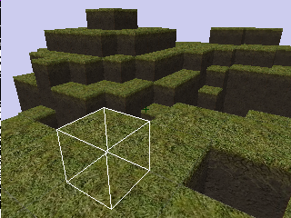

| Title | GBMine aka MineEngine |
| Date | 2017-01-29 03:55 |
| Category | Games |
| Language | C++ |
| Libraries | Allegro 4 |
A real-time, raytraced, low-resolution "cube world" aka voxel aka Minecraft rendering engine. Features some simple world generation. The algorithm is similar to 2D grid raycasters like Wolfeinstein but in 3D.